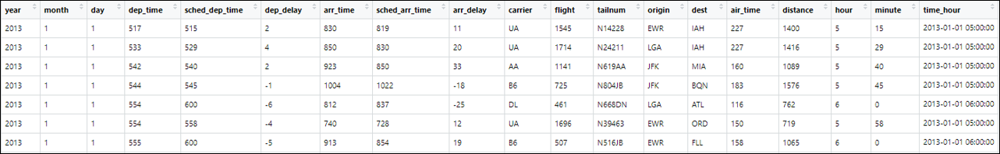

Chapitre 5 Manipulation des objets
5.1 Liste
Un vecteur, est une liste d’élément de même type. À l’inverse, une liste est une collection d’objets de différentes classes.
La fonction list permet de créer une liste.
ma_liste <- list(matrix(data = 1:10, nrow = 2),
"Hello world",
c("Pierre","Paul","Jacques"))
ma_liste## [[1]]
## [,1] [,2] [,3] [,4] [,5]
## [1,] 1 3 5 7 9
## [2,] 2 4 6 8 10
##
## [[2]]
## [1] "Hello world"
##
## [[3]]
## [1] "Pierre" "Paul" "Jacques"Pour accéder à un objet d’une liste, on utilise des doubles crochets : par exemple [[ 1 ]] pour le premier objet d’une liste.
## [,1] [,2] [,3] [,4] [,5]
## [1,] 1 3 5 7 9
## [2,] 2 4 6 8 10On peut accéder aux objets d’une liste avec le $lorsque les objets ont des noms. Les noms peuvent être définis lors de la création de la liste ou avec la fonction names.
ma_liste <- list(obj1 = matrix(data = 1:10, nrow = 2),
obj2 = "Hello world",
obj3 = c("Pierre","Paul","Jacques"))
ma_liste$obj1## [,1] [,2] [,3] [,4] [,5]
## [1,] 1 3 5 7 9
## [2,] 2 4 6 8 10## $matrice
## [,1] [,2] [,3] [,4] [,5]
## [1,] 1 3 5 7 9
## [2,] 2 4 6 8 10
##
## $element
## [1] "Hello world"
##
## $vecteur
## [1] "Pierre" "Paul" "Jacques"Comme pour les vecteurs, la fonction `length’ retourne la longueur d’une liste.
## [1] 3Pour supprimer un objet d’une liste, on lui affecte la valeur NULL
## $element
## [1] "Hello world"
##
## $vecteur
## [1] "Pierre" "Paul" "Jacques"Pour ajouter un objet à une liste, on affecte un objet à au nom du nouvel objet de la liste qui n’existe pas.
## $element
## [1] "Hello world"
##
## $vecteur
## [1] "Pierre" "Paul" "Jacques"
##
## $matrice2
## [,1] [,2] [,3] [,4] [,5]
## [1,] 1 3 5 7 9
## [2,] 2 4 6 8 105.2 Matrice
On sait que qu’on peut accéder à un élément particulier d’un vecteur en faisant suivre le nom du vecteur de crochets contenant le numéro de l’élément désiré. Par exemple :
## [1] 5Cette opération, qui utilise l’opérateur [], permet donc la sélection d’éléments d’un vecteur.
Dans un objet à deux dimensions comme les matrices,
a <- matrix(data = 1:9, nrow = 3,
dimnames = list(c("ligne1","ligne2","ligne3"),
c("col1","col2","col3")))
class(a)## [1] "matrix"## col1 col2 col3
## ligne1 1 4 7
## ligne2 2 5 8
## ligne3 3 6 9on utilise la même syntaxe sauf qu’on précise les index lignes et colonnes entre [] séparés par une virgule.
## [1] 8## col1 col2 col3
## 2 5 8## ligne1 ligne2 ligne3
## 7 8 9On peut également effectuer une indexation multiple sur les matrices si on souhaite sélectionner plusieurs lignes et colonnes.
## col1 col3
## ligne1 1 7
## ligne2 2 8
## ligne3 3 9## col1 col2 col3
## ligne2 2 5 8
## ligne3 3 6 9## col1 col3
## ligne2 2 8
## ligne3 3 9Attention : Lorsqu’on effectue une indexation multiple, le résultat renvoyé est dans l’ordre des index précisés dans le vecteur. Nous aborderons de nouveau cette notion lors des tris.
## col2 col3 col1
## ligne3 6 9 3
## ligne2 5 8 2On peut également effectuer une indexation contraire sur les matrices en précisant toutes les lignes / colonnes que l’on ne veut pas sélectionner. Pour cela, on utilise le ‘-’ devant l’indexation :
## col1 col3
## ligne1 1 7
## ligne2 2 8
## ligne3 3 9## col1 col2 col3
## 1 4 7Attention : dans une matrice, tous les éléments sont de même type numeric, character ou logique. C’est pourquoi, on travaille avec une autre classe d’objet pour les jeux de données. La classe data.frame.
5.3 Data frame
La classe d’objet data.frame partage les mêmes propriétés que la classe matrix pour l’indexation. Un data frame c’est une collection de vecteurs de même taille stockés dans un objet à deux dimensions. Autrement dit, dans un data frame, chaque colonne est un vecteur avec son propre type (numeric, character, factor, logical, date, etc.). Dans cette partie nous allons voir comment manipuler un data.frame sans utiliser le package dplyr.
5.3.1 Indexations simples
Un des plus de la classe data.frame c’est la possibilité d’indexer les lignes et les colonnes avec leur nom.
## col1 col2 col3
## ligne1 1 4 7
## ligne2 2 5 8
## ligne3 3 6 9## [1] "matrix"## Error in a$col1: $ operator is invalid for atomic vectors## [1] "data.frame"## [1] 1 2 3## col2 col1
## ligne1 4 15.3.2 Indexations avec des booléens
Dans le langage R, il est possible d’effectuer des indexations sur des objets avec des booléens TRUE / FALSE.
Dans l’exemple ci-dessous, je vais indexer le vecteur avec un vecteur logique de même taille
## [1] 2 9Dans un data frame, on peut utiliser ce procédé pour sélectionner certaines lignes et colonnes :
## col1 col2 col3
## ligne1 1 4 7
## ligne2 2 5 8
## ligne3 3 6 9## col1 col2 col3
## ligne2 2 5 8## [1] 7 8 9#accéder à l'élément de la 2ème ligne et 3ème colonne
b [ c(FALSE,TRUE,FALSE), c(FALSE,FALSE,TRUE) ]## [1] 8Ainsi, avec des vecteurs logiques, il est possible d’indexer des data.frame. C’est ce mécanisme qui permet d’effectuer des filtres.
5.3.3 Filtre et sélection dans un data frame
Pour filtrer un data.frame, il suffit d’insérer un ou plusieurs tests logiques dans l’indexation de l’objet. Pour rappel, les tests logiques retournent toujours des valeurs logiques TRUE / FALSE.
## [1] FALSE TRUE TRUE FALSE TRUE## col1 col2 col3
## ligne1 1 4 7
## ligne2 2 5 8
## ligne3 3 6 9## col1 col2 col3
## ligne2 2 5 8
## ligne3 3 6 9## col1 col2 col3
## ligne2 2 5 85.3.4 Exercices
5.3.4.1 Sujet
Pour illustrer ces notions, on utilise la base de données correspondant aux informations de tous les vols au départ d’un des trois aéroports de New-York en 2013. La base de données est répartie en 5 tables et disponible à partir du package nycflights13.
#on charge le package
library(nycflights13)
#on affiche les objets disponibles du package
ls("package:nycflights13")## [1] "airlines" "airports" "flights" "planes" "weather"Nous allons utiliser la table flights qui présente 336 776 vols sur 19 variables
Voici une description de cette table :
year,month,day: date du vol.dep_time,arr_time: Heures de départ et d’arrivée réelles (format HHMM ou HMM).sched_dep_time,sched_arr_time: Heures de départ et d’arrivée prévues (format HHMM ou HMM).dep_delay,arr_delay: Retards de départ et d’arrivée, en minutes. Les temps négatifs représentent des départs / arrivées précoces.carrier: Abréviation à deux lettres des compagnies aériennes.flights: Numéro de voltailnum: Immatriculation de l’avionorigine,dest: Aéroport de départ et destination.air_time: Durée du vol en minutes.distance: Distance entre les aéroports, en miles.hour,minute: Heure de départ prévue divisée en heures et minutes.time_hour: Date et heure prévues du vol

Exercice 1
Installez, puis chargez le package nycflights13
Combien de lignes, colonnes sont présentes dans cette table ?
Affichez le nom des colonnes
Affichez un résumé des données
Exercice 2
Sélectionnez uniquement les colonnes
year,month,day.Sélectionnez uniquement les colonnes 13 à 19.
Sélectionnez toutes colonnes sauf
dep_delayetarr_delay.
Exercice 3
Pour répondre aux questions, utilisez des tests logiques sans passer par la fonction subset.
Filtrez la table en sélectionnant les vols du mois de janvier.
Filtrez la table en sélectionnant les vols en provenance de
LGAetJFK.Filtrez la table en sélectionnant les vols avec 10 à 30 min de retards à l’arrivée.
Filtrez la table en sélectionnant les vols avec 10 à 30 min de retard à l’arrivée du mois de janvier.
5.3.4.2 Correction
Exercice 1
- Installez, puis chargez le package nycflights13
- Combien de lignes, colonnes sont présentes dans cette table ?
## [1] 336776 19- Affichez le nom des colonnes
- Affichez un résumé des données
Exercice 2
- Sélectionnez uniquement les colonnes
year,month,day.
## [1] 336776 3- Sélectionnez uniquement les colonnes 13 à 19.
## [1] 336776 7- Sélectionnez toutes colonnes sauf
dep_delayetarr_delay.
On utilise un test logique sur le nom des colonnes
## [1] "year" "month" "day" "dep_time"
## [5] "sched_dep_time" "dep_delay" "arr_time" "sched_arr_time"
## [9] "arr_delay" "carrier" "flight" "tailnum"
## [13] "origin" "dest" "air_time" "distance"
## [17] "hour" "minute" "time_hour"## [1] FALSE FALSE FALSE FALSE FALSE TRUE FALSE FALSE TRUE FALSE FALSE
## [12] FALSE FALSE FALSE FALSE FALSE FALSE FALSE FALSE## [1] 336776 2Exercice 3
Pour répondre aux questions, utilisez des tests logiques sans passer par la fonction subset.
- Filtrez la table en sélectionnant les vols du mois de janvier.
## [1] 27004 19- Filtrez la table en sélectionnant les vols en provenance de
LGAetJFK.
## [1] 215941 19- Filtrez la table en sélectionnant les vols avec 10 à 30 min de retards à l’arrivée.
requeteC <- flights[ (flights$arr_delay > 10) &
(flights$arr_delay < 30) &
(!is.na(flights$arr_delay)), ]
dim(requeteC)## [1] 38819 19- Filtrez la table en sélectionnant les vols avec 10 à 30 min de retard à l’arrivée du mois de janvier.
requeteD <- flights[ (flights$arr_delay > 10) &
(flights$arr_delay < 30) &
(!is.na(flights$arr_delay)) &
(flights$month == 1) , ]
dim(requeteD)## [1] 3410 195.3.5 Trier un data frame
On sait que la fonction sort permet de trier un vecteur.
## [1] 9 6 4 1La fonction order permet de trier un vecteur à partir des rangs.
## [1] 2 4 3 1On utilise ensuite le vecteur avec les rangs pour trier le vecteur
## [1] 9 6 4 1Pour trier un data frame ou une matrice, on utilise le même procédé avec la fonction order.
a <- matrix(data = c(1,4,4,0,7,9,2,5,6), nrow = 3,
dimnames = list(c("ligne1","ligne2","ligne3"),
c("col1","col2","col3")))
a## col1 col2 col3
## ligne1 1 0 2
## ligne2 4 7 5
## ligne3 4 9 6Ici, on souhaiter trier la matrice selon la deuxième colonne avec un tri décroissant. Seule, la fonction order renvoie les rangs dans lesquels il faudrait trier le tableau.
## [1] 3 2 1Il faut utiliser ce vecteur de rang dans l’indexation de la matrice pour la trier.
## col1 col2 col3
## ligne3 4 9 6
## ligne2 4 7 5
## ligne1 1 0 2On peut aussi utiliser le ‘-’ devant le vecteur à trier pour effectuer un tri décroissant.
## col1 col2 col3
## ligne3 4 9 6
## ligne2 4 7 5
## ligne1 1 0 2C’est cette syntaxe qu’on retrouve pour réaliser des tris successifs, on utilise toujours la fonction order avec chaque vecteur comme argument.
On souhaite trier la première colonne par ordre croissant puis la deuxième colonne par ordre décroissant :
## col1 col2 col3
## ligne1 1 0 2
## ligne3 4 9 6
## ligne2 4 7 55.3.6 Exercice
5.3.6.1 Sujet
Nous utilisons toujours la table flights. Pour faciliter la lecture des résultats des requêtes, n’affichez que :
- les 5 premières lignes
- la colonne
flight,tailnumet celles avec le(s) tri(s) concerné(s)
Exercice 1
Trier la table selon le mois du vol
Trier la table selon les vols avec le plus de retard à l’arrivée
Trier la table par vols de provenance, puis de destination
5.3.6.2 Correction
Exercice 1
- Trier la table selon le mois du vol
| flight | tailnum | month |
|---|---|---|
| 1545 | N14228 | 1 |
| 1714 | N24211 | 1 |
| 1141 | N619AA | 1 |
| 725 | N804JB | 1 |
| 461 | N668DN | 1 |
- Trier la table selon les vols avec le plus de retard à l’arrivée
| flight | tailnum | arr_delay | |
|---|---|---|---|
| 7073 | 51 | N384HA | 1272 |
| 235779 | 3535 | N504MQ | 1127 |
| 8240 | 3695 | N517MQ | 1109 |
| 327044 | 177 | N338AA | 1007 |
| 270377 | 3075 | N665MQ | 989 |
- Trier la table par vols de provenance, puis de destination
rang <- order(flights$origin, flights$dest)
requeteC <- flights[ rang , c("flight", "tailnum", "origin", "dest") ]| flight | tailnum | origin | dest | |
|---|---|---|---|---|
| 361 | 4112 | N13538 | EWR | ALB |
| 570 | 3260 | N19554 | EWR | ALB |
| 785 | 4170 | N12540 | EWR | ALB |
| 1280 | 4316 | N14153 | EWR | ALB |
| 1537 | 3260 | N14153 | EWR | ALB |
5.3.7 Agréger des données
Le langage R permet aussi d’effectuer des opérations groupées en effectuant des agrégations.
Pour cela on utilise la fonction aggregate.
Il faut préciser dans la fonction le champ avec lequel on souhaite grouper les données, puis la fonction d’agrégation à utiliser.
Ici, on calcule le retard moyen au départ pour chaque aéroport d’origine :
| origin | dep_delay |
|---|---|
| EWR | 15.10795 |
| JFK | 12.11216 |
| LGA | 10.34688 |
On peut également grouper les données selon plusieurs champs qu’on renseigne avec le ‘+’ dans l’argument formula.
Ici on calcule le retard moyen au départ pour chaque aéroport d’origine et chaque mois :
| origin | month | dep_delay |
|---|---|---|
| EWR | 1 | 14.905748 |
| JFK | 1 | 8.615826 |
| LGA | 1 | 5.641560 |
| EWR | 2 | 13.067263 |
| JFK | 2 | 11.791355 |
| LGA | 2 | 6.961582 |
Le raccourci ‘.’ dans l’argument formula permet d’agréger toutes les colonnes en fonction ‘~’ d’une ou plusieurs.
agregation <- aggregate(formula = . ~ origin,
data = flights[ , c("origin","dep_delay","arr_delay","distance")],
FUN = mean)| origin | dep_delay | arr_delay | distance |
|---|---|---|---|
| EWR | 15.00911 | 9.107055 | 1064.7522 |
| JFK | 12.02361 | 5.551481 | 1275.2106 |
| LGA | 10.28658 | 5.783488 | 784.7561 |
5.3.8 Exercice
5.3.8.1 Sujet
Exercice 1
Calculez le retard maximum au départ de chaque aéroport
Calculez l’écart-type sur les retards au départ et l’arrivée pour chaque aéroport d’origine
Calculez le nombre de vols par aéroport d’origine
5.3.8.2 Correction
- Calculez le retard maximum au départ de chaque aéroport
| origin | dep_delay |
|---|---|
| EWR | 1126 |
| JFK | 1301 |
| LGA | 911 |
- Calculez l’écart-type sur les retards au départ et l’arrivée pour chaque aéroport d’origine
agregationB <- aggregate(formula = . ~ origin,
data = flights[ , c("origin","dep_delay", "arr_delay")],
FUN = sd)| origin | dep_delay | arr_delay |
|---|---|---|
| EWR | 41.18521 | 45.52918 |
| JFK | 38.82710 | 44.27745 |
| LGA | 39.91130 | 43.86227 |
- Calculez le nombre de vols par aéroport d’origine
| origin | tailnum |
|---|---|
| EWR | 120229 |
| JFK | 110370 |
| LGA | 103665 |
5.4 Testez vos connaissances !
Testez vos connaissances sur ce chapitre avec ce quiz (10 min) en cliquant ici.